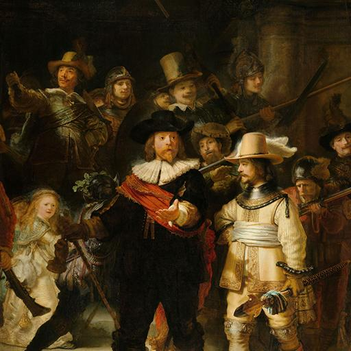

Hexagram 7 – Shi: Order in Formation
Upper: Earth (☷) · Lower: Water (☵)

Core Meaning
The goal in front of you needs discipline and organization, not solo effort. Set clear rules, define roles, and lead by example so everyone can move in the same direction.
“I prepare with discipline and help people move toward a shared goal.”
Blessing
May you find reliable people to stand beside you and work toward a common purpose.
Guidance by Life Area
Love
The relationship needs clearer expectations and boundaries. Agree on what matters instead of using silence or emotion to punish each other.
Agree on boundaries for important issues:
- Clarify who handles shared responsibilities.
- Solve the issue instead of punishing each other with distance.
Career
This is a time for organized action. Write down goals, owners, and deadlines so effort turns into coordinated progress.
Write down goals, owners, and deadlines:
- Keep responsibilities clearly defined.
- Review progress regularly and correct drift early.
Health
Improvement needs consistency more than occasional intensity. Keep sleep, activity, and recovery regular, and track them without extra effort.
Keep regular times for sleep, movement, and rest:
- Track consistency instead of chasing perfection.
- Continuity matters more than one hard session.
Finances
Give each part of your money a clear purpose. A simple system for spending, saving, and long-term goals can reduce financial anxiety.
Separate income into living costs, savings, and long-term goals:
- Review assets and debt monthly.
- Set rules before large spending.
Relationships
You may need to coordinate or lead others. Good leadership gives people a shared direction and treats problems as issues to solve, not people to blame.
Clarify the shared goal and roles before working together:
- Address problems without humiliating people.
- Apply basic standards consistently.